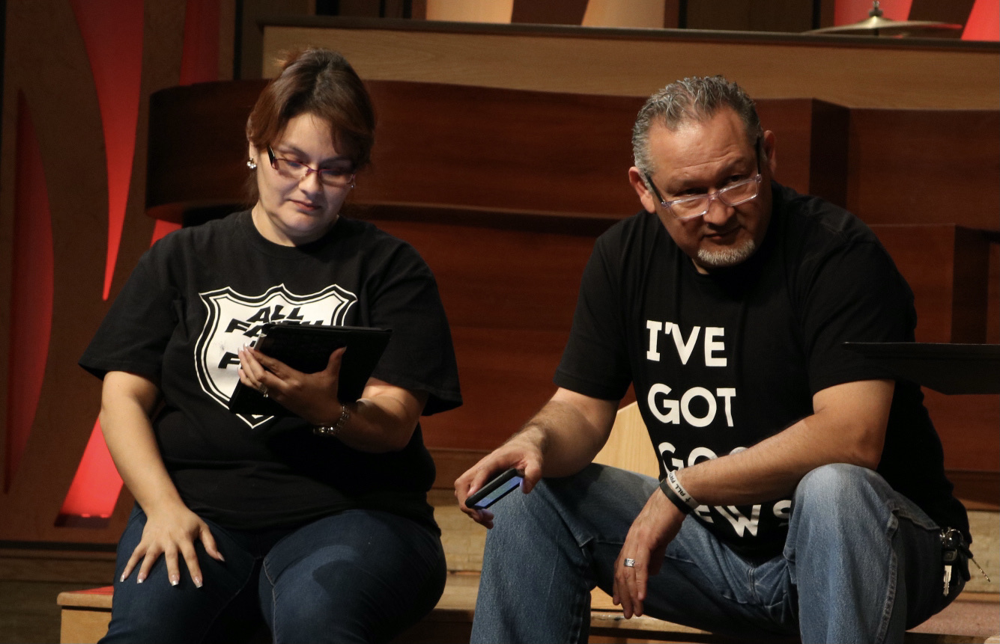

Devotionals
My maternal grandmother, Lilia Limon was my greatest spiritual influence of my youth. Every time I turned around she seemed to be in prayer. At the sink washing dishes, behind the stove cooking, on the altar at church, or at the park kneeling at a table in the pavilion. These are some of my favorite memories of her that taught me the necessity of prayer in every situation. "I remember your genuine faith, for you share the faith that first filled your grandmother Lois and your mother, Eunice. And I know that same faith continues strong in you." II Timothy 1:5 NIV

The most significant miracle of my youth involved my mother. In the early 1990's she was diagnosed with cancer and required a bone marrow transplant to live. I was 10 yrs old and couldn't concieve of life without her. It was during this difficult time that my grandfather introduced me to Christ and handed me a Bible and told me to read it daily. I discovered scripture passages about healing and immediately began to pray earnestly for God to heal my mother. In God's miraculous mercy he healed my mother of cancer and allowed her to live until she was sixty-four. I beleive this miracle was more for me than it was for my mother, as it solidified my faith and was the genesis of a life-long relationship with Him.
Apologetic Mom
"When the Pharisees criticized him for these accusations, Jesus made no apology. On the contrary, he implied the Pharisees were in trouble because they thought themselves too good for such company. This was Jesus' persistent criticism of his beloved Israel. they had developed a pessimistically separatist outlook on the world. They had become a family that only socialized with family because the neighborhood had become too dangerous. They had become like Christians who attend Christian schools not because they value a Christian education, but because they fear thecontamination of non-Christians."
Marriage and Music

When Manny and I married alomost nine years ago, I had no idea what it would be like to be a musician's wife. I didn't possess any musical talent, nor did I understand what recording a song involved.